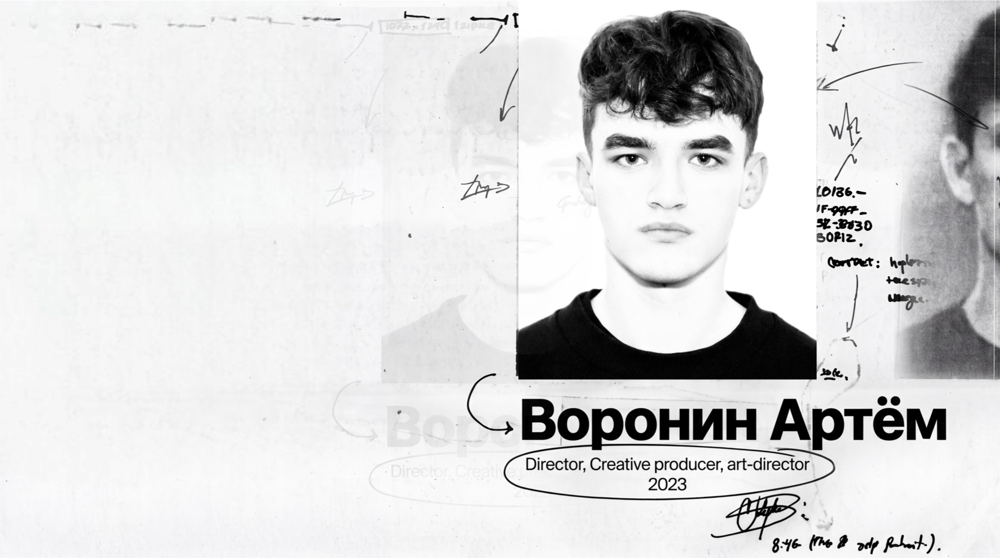
Придумываю, как артист или бренд должен выглядеть, звучать и вести себя — чтобы хотели быть им или с ним.
8+ лет в индустрии. Полный цикл продакшена: от первой идеи до финального результата. YouTube, TikTok, сцена, нейросети, 3D.
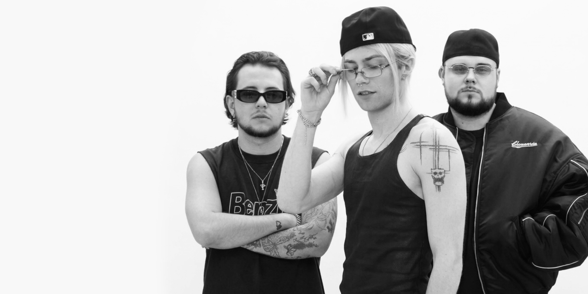
Режиссура выступления на главной сцене фестиваля. Придумал концепцию с леопардовым хаммером как узнаваемым визуальным символом — от разъездов по Москве до выезда артистов на сцену. Полный цикл: сценарий, постановка, координация с технической командой площадки.
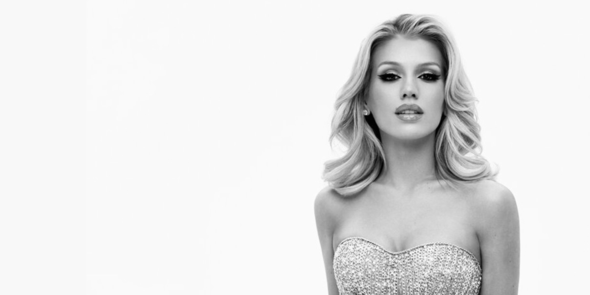
Визуал для 5 выступлений на главном музыкальном конкурсе страны. Создал 3D-графику для сценического сопровождения, синхронизировал движение артистки со светом, экранами и пиротехникой. Работал с командой сценографов и режиссёров трансляции.
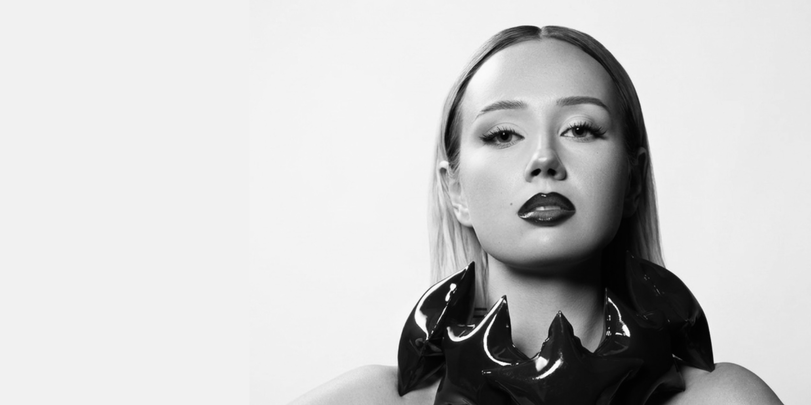
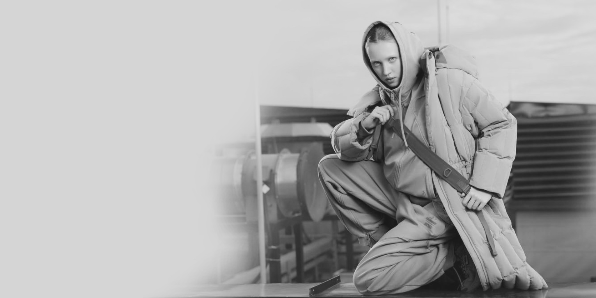
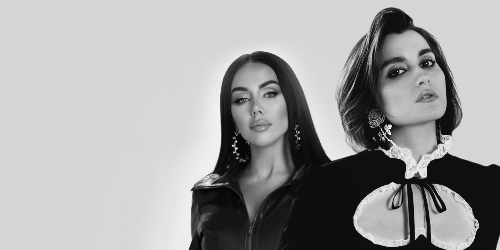
Создавал визуальный образ артистки: концепции для клипов, фотосессий и публичных выходов. Режиссировал три сценических номера для конкурса красоты BRICS: надувная пустыня, облака в дымовой атмосфере, движущиеся платформы. Работал с крупными режиссёрами и продакшнами.
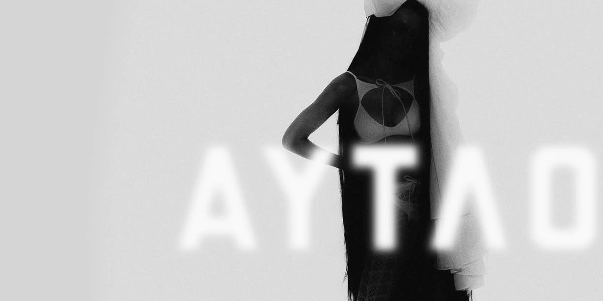
Придумал и внедрил визуальные форматы для бренда, которые потом подхватили Jacquemus, Balenciaga и другие крупные игроки. ASMR-ролики — один из ключевых примеров: запустил тренд раньше рынка. Использовал нейросети для генерации графики. Полный цикл: от идеи до съёмки, монтажа и звука. 3 года работы с брендом.
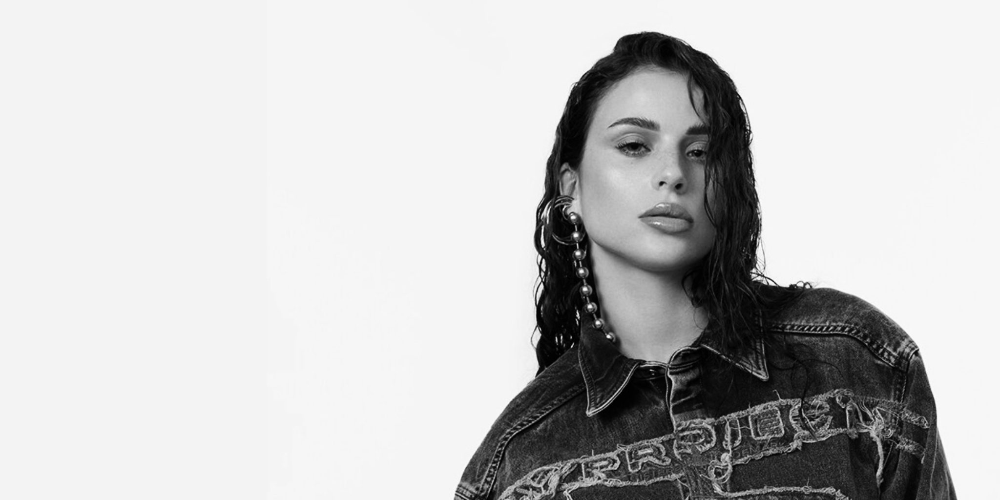
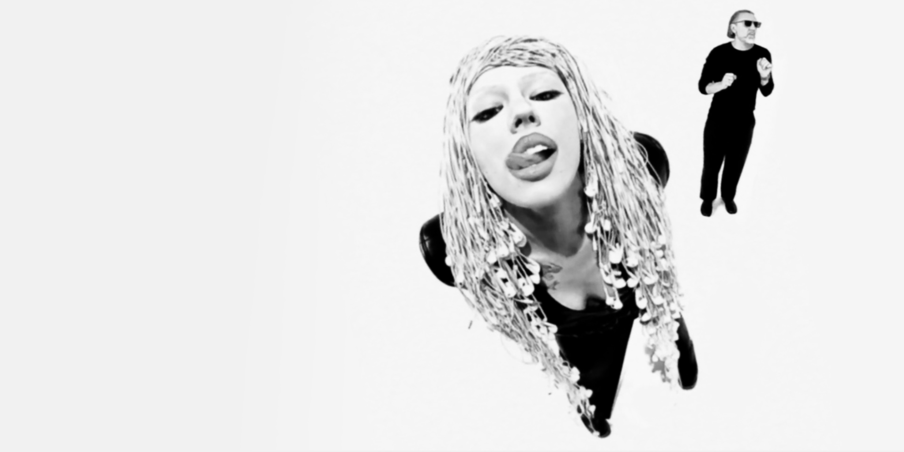
Режиссировал сниппет в стилистике «RAW» съёмки. Материал попал на федеральное телевидение. Создал провокационный инфоповод в ключе артистки.
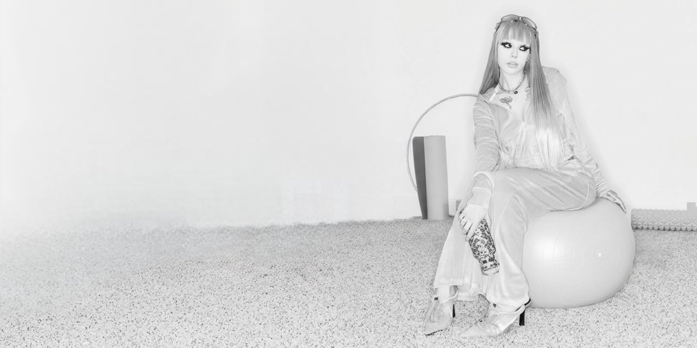
Придумал концепцию и руководил съёмкой рекламной кампании. Визуальный ключ лёг в основу витрин бутиков TBOE по всей России. Кампания стала вирусной, обеспечила рост продаж.
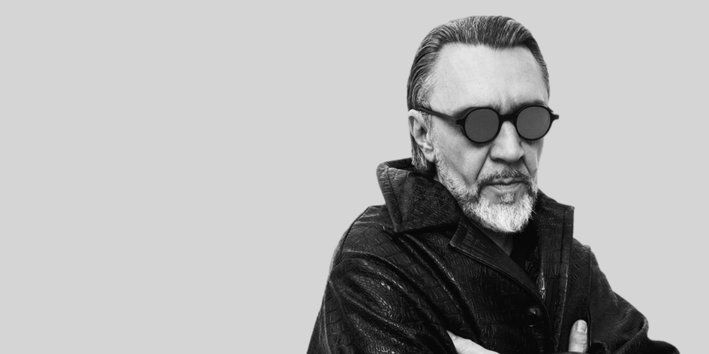
Разработал визуальную концепцию под выход альбома. Снял клип и рекламные сниппеты. Собрал и координировал крупные площадки в сжатые сроки.
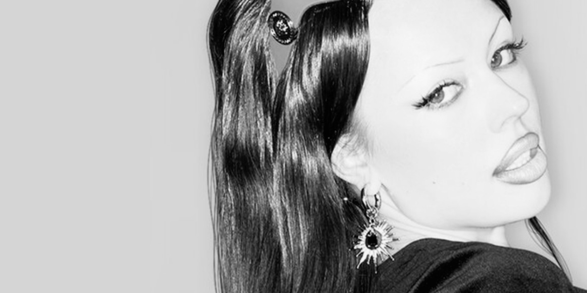
Создал визуальный ключ артистки для рекламных и коллаборационных проектов. Прогревы к релизам, провокационные инфоповоды, защита креатива перед заказчиками.
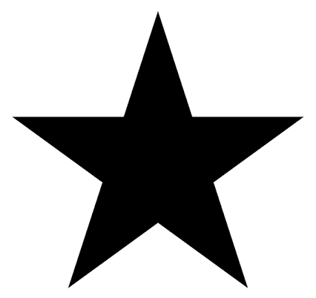
Разрабатывал визуальные концепции для артистов лейбла: Клава Кока, Егор Шип, Кирилл Скрипник, Natan. Снимал сниппеты, клипы и рекламные кампании.
Разрабатывал и продюсировал маркетинговые спецпроекты с блогерами для крупных брендов: KFC, Ozon, Spotify, Coca-Cola, Яндекс Маркет, Яндекс Музыка, VK Музыка.